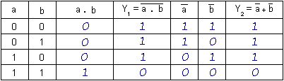

LES OPERATEURS LOGIQUES - DE MORGAN
Dites-moi dans quel département vous vivez et je vous dirai dans quelle région il se situe.
-- Sélectionnez le département où vous vivez --
Dites-moi quel âge vous avez
et je vous dirai qui vous êtes.
